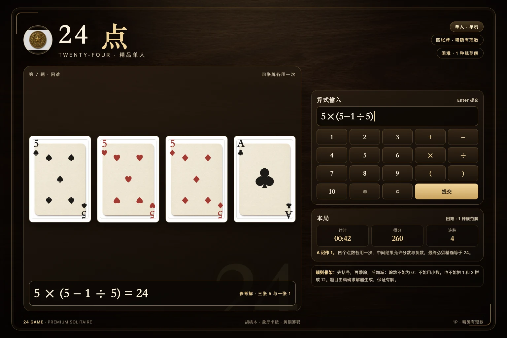
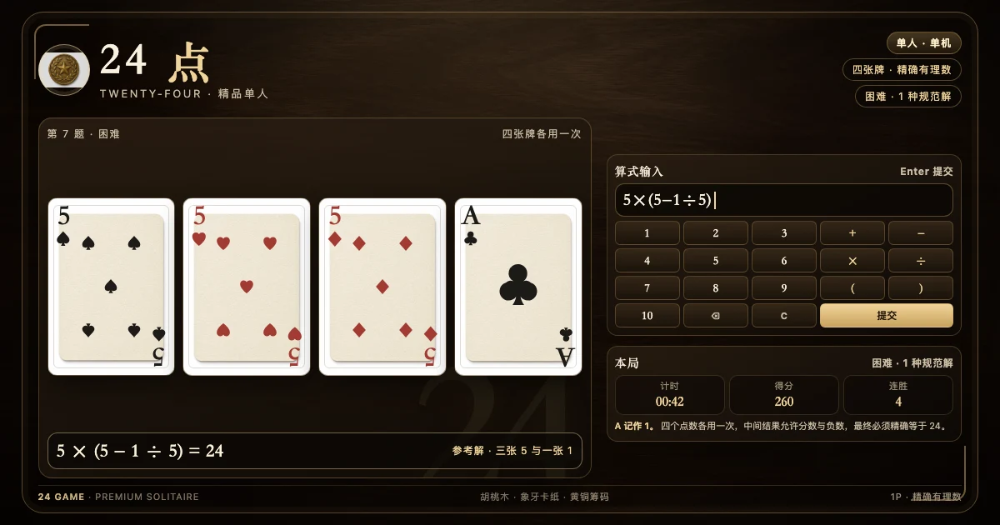

1游戏目标
24 点（24 Game）是一道单人算术题：桌面上翻开四张牌，每张牌有一个 1 到 10 的点数；你需要用加、减、乘、除和括号，把四个点数各使用一次，得到恰好 24。题目给的不是四个数字的排列，而是一条必须同时满足「数值」和「用牌」两个约束的表达式。
本作是单人 · 单机版本：没有对手、没有联机房间，也不会上传任何数据。每题由内置的精确求解器生成，保证至少存在一条合法解；求解器、表达式解析器与计分都在本地运行，离线也能继续玩。
2牌组与题面
本作的牌组共 40 张：点数 1 到 10，每个点数配四种花色（黑桃、红桃、方块、梅花）。A 按 1 计；牌面左上角仍使用标准扑克索引 A，规则页与游戏页都会提示「A 记作 1」。点数可以重复出现，例如两张 5、三张 5 都是合法题面。
题目生成使用带种子的确定性洗牌。同一个种子、同一难度、同一题号会得到同一组牌；每日挑战则把日期与难度写进种子，所以同一天、同一难度的每日题对所有玩家一致，而第二天会换成另一组牌。
牌面点阵
牌面由代码绘制，不使用 AI 人像或位图牌面。2 到 10 的花色点阵遵循标准扑克排列：2 上下各一枚、3 中列三枚、4 四角、5 四角加中、6 两列各三、7 再加中上、8 再加中下、9 两列各四加中、10 两列各四加中上中下；A/1 是一枚放大的花色。左右角标上下 180° 镜像，牌面使用象牙卡纸材质。
3合法算式
你可以在输入框中输入一条算式，规则如下：
- 只能使用 + − × ÷（也接受键盘输入的 + - * /）与左右括号；
- 四个点数必须各出现一次，可以按任意顺序出现；
- 允许一元负号，例如 −(1+2)；允许负数与分数作为中间结果；
- 不允许小数、科学计数法、函数名、字母、等号或分号；
- 不允许把两个数字直接拼接成新的数，例如用 1 和 2 拼出 12；
- 除数不能为 0；出现除以 0 的算式会被拒绝；
- 最终结果必须精确等于 24，用有理数比较，不使用浮点近似。
这条例子说明了两件事：第一，中间结果可以是分数（1 ÷ 5 = 1/5）；第二，乘除的优先级高于加减，括号可以改变结合顺序。解析器严格按照「先括号、再乘除、后加减」的递归下降语法工作，不会把 1+2×3 误算成 9。
为什么不用浮点
很多 24 点题目需要 1/3、1/5 这类循环小数。如果逐次做浮点运算，8 ÷ (3 − 8 ÷ 3) 这样的正确解可能因为舍入误差被判错。本作把每个数表示为约分后的整数分数，加减乘除都在分子分母上精确计算，最后再与 24/1 比较，因此不会出现「看起来是 24 但差一点点」的误判。
安全解析
输入框不是一段可执行代码。解析器先做词法切分，再用递归下降语法树求值，不使用 eval、Function 构造器或任何动态执行。字母、引号、分号、函数调用与小数点都会在词法阶段被拒绝，所以页面不会因为玩家输入而执行脚本。
4三个真实例子
如果你在游戏里点「提示」，页面会给出当前题目的一条最短规范解；点「答案」会直接展示参考解，但该题不计连胜，得分也会受影响。提示不会直接替你提交，仍然需要你自己确认表达式。
5三档难度
难度不是按「数字大小」划分，而是按题目有多少条本质不同的解法划分。求解器会把所有四则运算表达式枚举出来，把加法与乘法的交换律归一，再按表达式树去重，得到「规范解」数量。
每次切换难度都会按当前模式重新出题。自由练习可以随时换难度；每日挑战的难度也会写进种子，所以同一天的不同难度是两组不同的每日题。
6每日挑战与自由练习
每日挑战把本地日期与难度组合成种子，每天一组确定性题目。完成每日题会记录当日完成状态与连续天数；如果昨天也完成过，连续天数加一，否则从 1 重新开始。日期按设备本地时区计算，不依赖服务器。
自由练习使用时间戳种子，随时换一组新题，不计入每日连续天数，但会计入本次会话的得分、连胜与完成数。两种模式共用同一套 40 张牌、同一套求解器与同一套计分规则。
本作是单机游戏，成绩只写入当前浏览器的本地存储；没有账号、没有排行榜、没有网络请求。清除浏览器站点数据会同时清除最佳分数与每日记录，这是预期的本地存储行为。
7计分、连胜与计时
每题从计时开始，提交正确算式后停止。得分由基础分、速度奖励、连胜奖励与提示扣分组成：
「最佳」显示历史最高单次得分，「完成」显示本次会话解出的题数。最佳分数与最佳连胜会通过共享的本地存储模块写入浏览器，页面刷新后仍然保留；写入失败（例如隐私模式或配额已满）不会影响游戏继续运行。
8操作方式
- 点按牌面：把该牌点数插入算式；
- 数字键盘：1–9、10、四则运算符、括号、退格与 C；
- 撤销：删除光标前一个字符；清空：清空整条算式；
- 提交：点击键盘上的「提交」，或在输入框按 Enter；
- 键盘快捷键：N 新题、U 撤销、H 提示、Enter 提交；
- 提示 / 答案：提示显示一条最短解；答案直接展示参考解并结束本题；
- 新题 / 下一题：当前题未结束时点击视为跳过并进入下一题；本题结束后按钮变为「下一题」。
9常见问题
必须四张牌都用上吗？
必须。四个点数要各出现一次。重复点数按出现次数计算：题面是 5、5、5、1，算式中就必须恰好出现三个 5 和一个 1。漏用、多用、替换成别的数字都会被拒绝。
可以把两个数字拼成 12 或 10 吗？
不可以。相邻数字会被词法分析器识别为两个独立的数字字面量，而不是拼接。算式里出现「12」而题面没有 12 时，会因四张牌使用次数不匹配被拒绝。
中间结果可以是负数或分数吗？
可以。只要最终结果精确等于 24，中间出现负数、分数、甚至很大的数都合法。例如 8 ÷ (3 − 8 ÷ 3) 的中间结果包含 1/3。
为什么我的算式显示「结果是 23/2，不是 24」？
说明四则运算和用牌次数都合法，但最终值不是 24。页面会显示精确的分数结果，而不是四舍五入后的小数，方便你判断差在哪一步。
会不会遇到无解的题？
不会。出题器只从精确求解器确认有解的题面中发布题目；如果某个洗牌分组不满足难度档位，会继续寻找，直到找到符合档位的题面。
提示会影响成绩吗？
会。每题第一次使用提示扣 25 分；同一题重复提示不再扣。查看答案会结束本题、清零连胜，并记录为「查看答案」而不是「完成」。
成绩保存在哪里？会上传吗？
只保存在当前浏览器的本地存储中，由共享的 store 模块做安全的读写封装；没有账号、没有网络同步、没有追踪。清除站点数据会清空记录。
为什么牌面角落是 A，输入却要写 1？
A 是标准扑克对 1 的写法，游戏规则规定 A 记作 1。输入框接受数字 1；牌面角落的 A 与页面上的「A 记作 1」提示对应同一张牌。
10参考来源
- BV1FB4y1U7dF · 24 点游戏规则
- BV1Xz4y1Z7yg · 24 点游戏的递归算法求解
- BV1UrBxYsE2F · 所有的 24 点游戏的玩法
- BV1GP1kBDExW · 巧算 24 点游戏策略探究课


页面本身不加载外部字体、脚本或图片；上方 B 站链接只作为规则与算法研究来源，点击后才会离开本站。